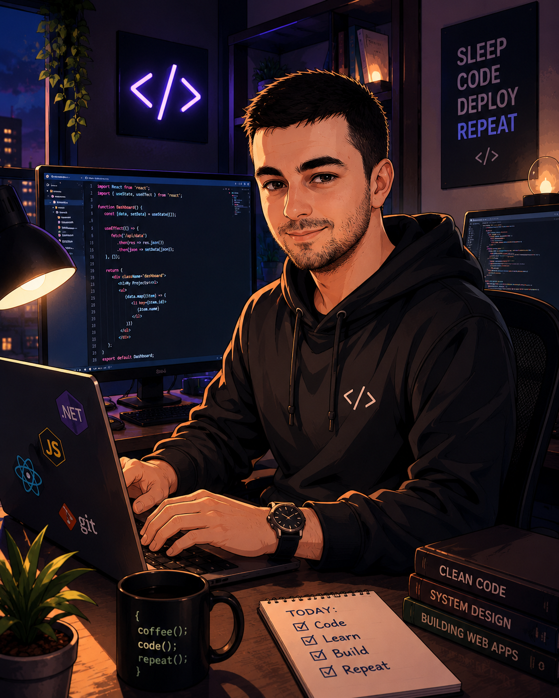

Interfaces that feel clear
React, JavaScript, Angular, HTML, CSS, responsive UI and accessible interaction.
Based in Israel · Open to opportunities
Full-stack developer with a customer-operations mindset—building reliable products that make sense to both users and businesses.

const developer = {
name: "Martin",
focus: "full-stack products"|
};
✓ ready to build
About
I’m Martin Terniak, a full-stack developer from Bat Yam. I enjoy turning requirements into responsive, reliable experiences—from the interface and client state to APIs, authentication and data.
My background in customer operations at 3M trained me to communicate clearly, own problems, coordinate across teams and stay accurate under pressure. Those aren’t separate from development; they’re how better software gets built.
Visit my GitHub ↗React, JavaScript, Angular, HTML, CSS, responsive UI and accessible interaction.
Node.js, Express, ASP.NET Core, C#, REST APIs, authentication and real-time flows.
SQL, MongoDB, EF Core, Git, Playwright and methodical debugging.
Selected work
A focused selection showing backend depth, real-time systems and thoughtful user flows.
Full-stack · Collaborative final project
Private messaging with authentication, online status, persisted conversations and an integrated Tic-Tac-Toe experience.
ASP.NET Core MVC
Catalog, comments, authentication, image uploads and administrator workflows backed by EF Core and SQL.
Frontend application
An interactive ordering flow designed around simple browsing, clear selection and a customer-friendly interface.
Experience
Global business environment
Recent experience
Supported customer and operational processes across a fast-moving global organization—coordinating stakeholders, resolving issues and maintaining accuracy under pressure.